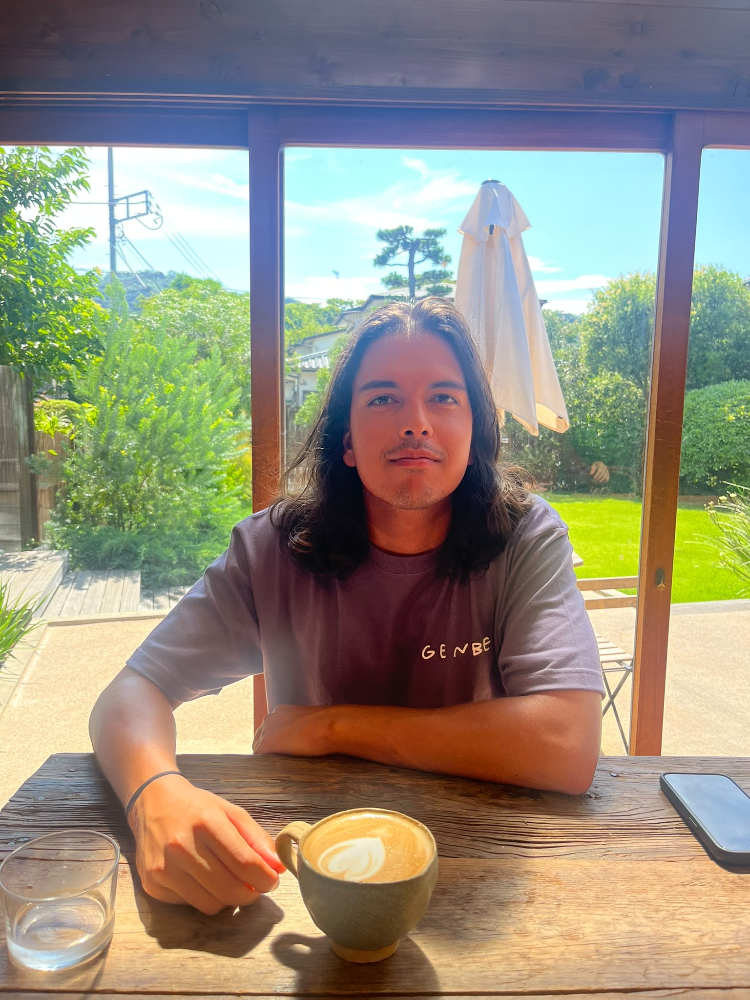

Welcome to my page, where you'll find a plethra of sporadic works, reflections, and more.
From random projects to personal preferences, all lies within.
Hope you find whatever it is you care to.
In terms of information architecture, I implemented a rudimentary content inventory when creating the navigation section of the site. I took this as meaning that each clickable link had a title or picture that made it obvious where they went/were pathed, thus having locatable content. I put this at the top of the page so it would be immediately obvious, should one have something specific they were looking for. I would like to move it to the other side of the page, and have a cleaner format, preferably without the blue color, and underlines. This is shown in the sketch, along with some other aspects that I wish to implement. The sketch helped me find where I preferred different parts to be, but my creation is still far from it, but I’m happy that I can feel my ideas coming to light on the screen. The links and position of the information are definitely temporary as they don’t have the appearance I’m looking for, but the information and pictures themselves work well with what I hope for this website to be. As the site grows, I will need to make the text and pictures flow together and complement each other as they will be viewed in reference to one and another.